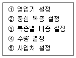
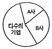

패션머천다이징산업기사 (2006-08-06 기출문제)
1과목: 패션마케팅
1. 시마주시게루(Shimizu Shiegeru)의 상품구성 중의 하나로, 전략상품의 품목구성비는 전품목의 약 30~40%정도를 차지하지만 실제 매출액은 20~30% 정도 불과하다. 파는 상품이라기 보다 보여주는 상품은?
- 기본상품
- 전략상품
- 중점상품
- 보완상품
(정답률: 알수없음)

2. 패션 머천다이저의 자질에 대한 설명 중 틀린 것은?
- 패션 트렌드를 정확하게 분석하여 매상과 이익으로 이어지게 하여야 한다.
- 기업의 궁극적인 목적인 이익 실현에 부응하도록 한다.
- 정확한 타임 스케줄에 의한 업무수행으로 기업의 목적을 달성하여야 한다.
- 패션상품은 감성 추구형이므로 논리적인 면보다는 감성적인 면을 추구해야 한다.
(정답률: 알수없음)
3. 디자인 컨셉을 설정할 때 필요한 요소가 아닌 것은?
- 매장
- 소재
- 색채
- 실루엣
(정답률: 알수없음)
4. 외적 탐색에 대한 설명 중 틀린 것은?
- 제품이 비교적 고가격일 때, 상표대안들 간에 가격이나 특징에 있어서 차이가 클 때 보다 많은 외적 탐색을 한다.
- 소비자의 연령이 높을수록 소득이 많을수록 외적 탐색을 많이 하게 된다.
- 의사결정의 대상이 되는 제품군에 대한 관여도가 높을수록 지각된 위험이 클수록 외적 탐색을 많이 하게 된다.
- 고려 대상이 되는 점포들의 거리가 가깝고, 점포내 쇼핑 분위기가 쾌적할수록 외적탐색을 많이 하게 된다.
(정답률: 알수없음)
5. 최근 물적 유통 시스템에 관한 설명 중에서 틀린 것은?
- 효율적인 물적 유통 관리는 의류업체의 경쟁력 향상과 이윤증대에 크게 영향을 준다.
- 물류란 상품을 생산된 곳으로부터 그것이 쓰여지는 곳까지 효과적으로 옮기기 위해 수행되는 모든 활동을 말한다.
- 물적 유통에는 판매예측, 원부자재 관리, 주문처리, 재고 관리, 포장, 운송, 고개서비스 등이 포함된다.
- 최근에는 물류의 핵심이 고객 서비스 향상에서 물류비용을 최소화하는 것에 관심이 집중되고 있다.
(정답률: 알수없음)
6. 정보분석업무, 상품기획업무, 생산지원업무 등을 하는 패션 스페셜리스트는?
- 리테일 머천다이저
- 어패럴 머천다이저
- 스타일리스트
- 패션 컨버터
(정답률: 알수없음)
7. 유통경로에서 채널캡틴(Channel Captain)의 의미는?
- 특정상품 유통에 관계하는 일반 소매상
- 일반상품을 대량 판매하는 도매상
- 특정상품의 유통에 가장 큰 영향력을 행사하는 사람
- 일반상품을 유통하는 대기업 소유의 공장
(정답률: 알수없음)
8. 다음 중 어패럴 머천다이저로서의 자질이 아닌 것은?
- 자신의 차림새에 대한 표현력
- 정확한 예측력
- 적극적인 행동력
- 풍부한 상품지식
(정답률: 알수없음)
9. 소비자 수요의 변화 정도를 나타내는 수요의 가격탄력성이 바르게 표현된 것은?
- 가격탄력성 = 수요의 변화율(%) ÷ 가격의 변화율(%)
- 가격탄력성 = 가격의 변화율(%) ÷ 수요의 변화율(%)
- 가격탄력성 = (가격 변화치 – 원래 가격) ÷ (수요의 변화치 – 원래 수요)
- 가격탄력성 = (원래 수요 – 수요의 변화치) ÷ (원래 가격 – 가격의 변화치)
(정답률: 알수없음)
10. 컴퓨터를 이용한 디자인은?
- CIM
- CAM
- CAD
- SCM
(정답률: 알수없음)
11. 다음 중 패션 바이어의 직무가 아닌 것은?
- 광고 제작
- 구매가 결정
- 구매처 선정
- 품목 결정
(정답률: 알수없음)
12. 패션 유통경로 간 수직적 갈등의 예는?
- 한 지역 내 대리점간의 갈등
- 제조회사와 도매상간의 갈등
- 온라인 점포와 TV 홈쇼핑채널간의 갈등
- 한 지역 내 직영점과 대리점간의 갈등
(정답률: 알수없음)
13. 시장 세분화를 위한 기준 설정에 관한 항목으로 옳은 것은?
- 지리적 기준 – 국적, 사회계층
- 사이코 그래픽 기준 – 개성, 생활주기
- 형태적 기준 – 상표충성도, 인구밀도
- 인구통계적 기준 – 연령, 추구이점
(정답률: 알수없음)
14. 패션산업의 특징에 관한 것 중 적절하지 않은 것은?
- 가격할인 폭이 비교적 낮은 제품
- 고부가가치 제품
- 계절적 요소
- 짧은 제품 주기
(정답률: 알수없음)
15. 리테일 머천다이저가 PB상표(유통업체/소매업체 상표)를 개발할 때의 특징이 아닌 것은?
- 소매업체의 PB상표는 제조업체 상표에 비해 높은 이익을 기대할 수 있다.
- 리테일 머천다이정는 PB상표를 기획하고 관리하기 위해 전문적 지식을 키워야한다.
- 리테일 머천다이저가 개발한 PB상표는 소매업체가 상품실패에 대한 위험부담이 상대적으로 적다.
- 리테일 머천다이저는 자사의 PB상표에 대해 점포에서의 진열이나 가격을 통제할 수 있다.
(정답률: 알수없음)
16. 상표와 관련된 설명 중 틀린 것은?
- National Brand는 제조업자가 자사제품에 대하여 상표를 결정하는 것으로 생산된 제품에 대해 제조업체가 직접 통제한다.
- Private Brand는 영국의 세인즈베리사에서 최초로 시작되었으며 1920년대 미국의 대규모화된 소매체인점들이 시장지배력을 강화하려는 대규모 제조업체에 대항하기 위해 개발하기 시작하였다.
- Private Brand는 생산업자가 자체적으로 제품기획을 하고 제조하여 상표를 결정하는 것이다.
- 라이센스 상표는 상표주로부터 상표의 사용을 허가받는 조건으로 판매액의 일정액을 상표주에게 지불한다.
(정답률: 알수없음)
17. 다음 중 패션기업의 생산기획 업무가 아닌 것은?
- 패턴디자인과 생산기술
- 생산의뢰와 납기계획
- 생산 원단계획
- 원부자재 조달
(정답률: 알수없음)
18. 패션 상품의 특성에 대해 옳은 것은?
- 유행주기가 빨라짐에 따라 내구재의 성격이 점점 강해진다.
- 패션상품의 형태는 소비자의 집합적 기호와 관련이 없다.
- 시간이 경과되고 대중으로 확산이 이루어지더라도 가치는 변하지 않는다.
- 패션상품은 사회구성원들의 집합적 기호의 상징적인 표현이 된다.
(정답률: 알수없음)
19. 마케팅 관리의 발전단계(4단계)중 기업에서 표적시장(Target market)의 욕구, 필요, 가치등을 확인하고 경쟁기업보다 효율적이고 능률적으로 소비자의 욕구를 충족시키기위한 단계는?
- 생산지향 단계
- 판매지향 단계
- 마케팅지향 단계
- 사회적 책임과 인간지향단계
(정답률: 알수없음)
20. 가격의 구성요소 중 공헌이익에 해당하는 것은?
- 이익 + 고정비
- 가격 – 총원가
- 고정비 + 변동비
- 마케팅원가 + 제조원가
(정답률: 알수없음)
2과목: 패션소재기획
21. 환상적이며 화려한 기분을 느낄 수 있는 분위기로 실루엣과 디테일을 강조하며 밝고 파스텔 조의 색상과 러플, 레이스와 같은 장식적 요소가 많이 사용되는 트렌드 테마는?
- 엘레강스 이미지
- 로맨틱 이지미
- 스포티 이미지
- 엑조틱 이미지
(정답률: 알수없음)
22. 의류시험소에서 원단의 품질 기준치에 해당하는 불합격 처리되는 결점 기준은?
- 1% 이상 결점이 발견된 원단
- 10% 이상 결점이 발견된 원단
- 30% 이상 결점이 발견된 원단
- 50% 이상 결점이 발견된 원단
(정답률: 알수없음)
23. 염색가공에서 제직(weaving)또는 편성(knitting)이 끝난 생지(生地)에 부착된 불순물을 제거해 내는 과정은?
- 표백(漂白)
- 염색(染色)
- 정련(精練)
- 발호(拔湖)
(정답률: 알수없음)
24. 소재를 취급하는 소재 전문회사나 패션회사의 MD가 소재 경향을 분석을 위한 자료수집 시 꼭 고려해야 할 사항이 아닌 것은? (문제 오류로 현재 복원중입니다. 보기 내용을 아시는 분들께서는 오류 신고를 통하여 보기 작성 부탁 드립니다. 정답은 2번입니다.)
- 소재의 새로운 기술동향을 파악한다.
- 패션회사의 판매조사 및 경쟁사 제품의 매장조사로 소비자가 선호하는 소재를 파악한다.
- 복원중
- 국내외의 소재전시회에서 전시된 소재의 행거샘플이나 스와치 샘플 등을 입수한다.
(정답률: 알수없음)
25. 주자직의 특성으로 맞는 것은?
- 직물조직 중 가장 간단하고, 최소 올수는 3올 이상으로 구성된다.
- 촉감이 부드럽고 광택이 많다.
- 표리가 같고 실용적이다.
- 띔수(비수)가 3, 5 등이 있고 기본 조직의 최소 올수는 7올 이상이다.
(정답률: 알수없음)
26. 다음 중 연화하여 용융하는 특징을 가지지 않는 섬유는?
- 아세테이트(acetate)
- 스판덱스(spandex)
- 레이온(rayon)
- 사란(salan)
(정답률: 알수없음)
27. 의류업체의 소재기획 프로세스를 순서대로 나열한 것은?
- 정보수집 →소재 맵 → 스타일 개발 및 소재선정 → 이미지 맵 → 발주 및 생산
- 정보수집 → 이미지 맵 → 소재 맵 → 스타일 개발 및 소재선정 → 발주 및 생산
- 소재 맵 → 스타일 개발 및 소재선정 → 정보수집 → 이미지 맵 → 발주 및 생산
- 소재 맵 → 정보수집 → 이미지 맵 → 스타일 개발 및 소재선정 → 발주 및 생산
(정답률: 알수없음)
28. 목재 펄프나 면 린터 등 셀룰로스를 원료로 사용하여 얻어진 섬유로서, 셀룰로스가 주성분인 섬유는?
- 레이론
- 세리신
- 나일론
- 면
(정답률: 알수없음)
29. 다음 중 가볍고 부드러우며, 따뜻한 성질을 갖고 있는 섬유는?
- 아크릴
- 비닐론
- 폴리에스테르
- 나일론
(정답률: 알수없음)
30. 다음 중 패션소재의 선택조건에 있어서 용도 및 기능과의 적합성에 해당되지 않는 것은?
- 재단, 봉제의 용이성
- 재질의 기능성, 내구성
- 관리상의 편이성
- 염색의 보존성
(정답률: 알수없음)
31. 필라멘트사에 꼬임을 주어 권축을 가지게 한 후 열처리 하여 만든 실은?
- Split yarn
- Fancy yarn
- Spun yarn
- Textured yarn
(정답률: 알수없음)
32. 다음 중 능직에 속하지 않는 것은?
- 개버딘
- 트윌
- 머슬린
- 서지
(정답률: 알수없음)
33. 하절기에 사용하고 남은 재고인 소모 크레이프(Crepe)소재를 추동용으로 계속 사용하기 위해서 필요한 가공은?
- 신징(Singeing)
- 밀링(Milling)
- 클리어 컷(Clear cut)
- 멜톤(Melton)
(정답률: 알수없음)
34. 다음 중 3대 합성섬유로 바르게 짝지워진 것은?
- 나일론, 폴리에스테르, 라이크라
- 아크릴, 나일론, 폴리에스테르
- 폴리에스테르, 라이크라, 아크릴
- 라이크라, 아크릴, 나일론
(정답률: 알수없음)
35. 다음 중 부직포의 용도로 가장 부적합한 것은?
- 침구류
- 모자
- 심지
- 수술용 시트
(정답률: 알수없음)
36. 현재 패션상품 기획과정에서 상품 차별화의 수단으로 가장 많이 이용되는 것은?
- 다양한 소재의 이용
- 스타일의 응용
- 상품종류의 다양화
- 소비자의 요구변화
(정답률: 알수없음)
37. 편성물에 관한 다음 설명 중 옳은 것은?
- 횡편성 소재는 경편성 소재보다 신축성과 벌키성, 형태 안정성이 높다.
- 리브편 조직은 신축성은 크나 평편소재보다 봉제성이 떨어 진다.
- 평편조직은 원단 표면과 이면에 루프가 연속적으로 나열 된다.
- 펄편 조직은 폭방향보다 길이방향의 신축성이 더 크다.
(정답률: 알수없음)
38. 고감성과 다양성을 겸비한 복합소재로 대표되는 글로벌 트렌드 소재에 포함되지 않는 것은?
- 혼방 소재
- 멜란지(Melange) 소재
- 시어서커(Seersucker) 소재
- 선 클로스(Sun-cloth) 소재
(정답률: 알수없음)
39. 자사가 의도하는 제품을 실현시키기 위하여 최적의 텍스타일을 검토하여 선택하거나 개발하는 작업은?
- 머천다이징(Merchandising)
- 텍스타일 디자인(Textile Design)
- 페브리케이션(Fabrication)
- 마켓 리서치(Market Research)
(정답률: 알수없음)
40. 다음 중 소재의 감성별 특징이 틀린 것은?
- 클린(Clean) - 매끈매끈한, 섬세한, 평평한
- 러프(Rough) - 까슬까슬한, 울퉁불퉁한, 거친
- 드라이(Dry) - 단단한, 뻣뻣한, 딱딱한
- 소프트(Soft) - 부드러운, 드레이프성이 있는
(정답률: 알수없음)
3과목: 유통관리 및 광고
41. 어떤 브랜드가 자켓, 팬츠, 스웨터, 원피스, 티셔츠 등의 상품군을 골고루 갖추어 놓았을 때 우리는 상품이 어떠하다고 말하는가?
- 확장제품이 다양하다.
- 상품의 깊이가 깊다.
- 실제상품이 다양하다.
- 상품의 폭이 넓다.
(정답률: 알수없음)
42. 다음 중 비주얼 머천다이징(Visual Merchandising)의 설명 으로 옳은 것은?
- 대중매체를 통한 비인적 마케팅 커뮤니케이션 활동
- 구매시점에서 소비자의 구매동기를 자극하는 것
- 판매원을 통한 인적 커뮤니케이션 활동
- 비용을 들이지 않고 기업이나 제품에 관한 정보를 소비자에게 알리는 것
(정답률: 알수없음)
43. 광고에 활용되는 인쇄매체인 신문의 가장 큰 장점은?
- 감정적 소구가 가능하다.
- 시청각 매체로 소구력이 강하다.
- 충동구매를 자극하기에 유리하다.
- 기록성과 보존성이 있다.
(정답률: 알수없음)
44. 패션의류유통에서 일반적으로 많이 볼 수 있는 유형으로 대리점, 특약점, 직영점 등의 유통경로를 설명하는 마케팅경로는?
- 제조업자 → 소매상 → 소비자
- 제조업자 → 소비자
- 제조업자 → 도매상 → 소매상 → 소비자
- 제조업자 → 배급업자 → 소매상 → 소비자
(정답률: 알수없음)
45. 상품 구매계획을 수립하기 위한 요소가 아닌 것은?
- 구매처 및 구매 브랜드 결정
- 아이템과 구매량 결정
- 구매시기 결정
- 재고처리 결정
(정답률: 알수없음)
46. 패션매장의 상품구색 계획을 세울 때 순서로 가장 적당한 것은?

- ① → ② → ③ → ④ → ⑤
- ③ → ① → ② → ④ → ⑤
- ② → ① → ③ → ④ → ⑤
- ⑤ → ① → ③ → ② → ④
(정답률: 알수없음)
47. 전자상거래의 특징이 아닌 것은?
- 상품을 구매하는데 시간적 ㆍ 공간적 제약을 받지 않는다.
- 물리적인 유형의 점포가 필요 없기 때문에 저렴한 비용으로 상품의 전시 ㆍ 판매가 가능하다.
- 전자상거래는 기업과 소비자 사이에서만 이루어질 수 있다.
- 고객의 인구통계적 특성과 구매행위를 분석하여 개별고객의 특성 및 욕구에 맞는 마케팅을 수립할 수 있다.
(정답률: 알수없음)
48. 패션홍보를 위하여 언론매체에 이와 관련된 자료를 작성해서 배포하는 것은?
- 광고카피
- 보도자료
- 시나리오
- 자서전
(정답률: 알수없음)
49. 패션상품의 영업계획을 기획할 때 영업기 설정 중 실매기의 전략에 해당되는 것은?
- 적은 물량 전개
- 패션 트랜드 주장
- 중심 품종의 사이즈에 다른 물량 소화
- 적정 가격 중심으로 가격 제안
(정답률: 알수없음)
50. 상품구성의 폭이란 구색을 갖추는 상품의 종류를 말한다. 다음 중 상품구성의 종류를 결정하는 요소는?
- 고객층
- 상품의 유효성
- 상품의 유행성
- 구매습관
(정답률: 알수없음)
51. 다음 중 무점포형 패션소매상의 유형에 속하는 것은?
- 인터넷 마케팅
- 대리점
- 백화점
- 재래시장
(정답률: 알수없음)
52. 상품구성을 설명한 것 중 틀린 것은?
- 상품의 깊이와 폭의 균형 잡힌 상품구성을 수행하는 것이다.
- 상품구성은 소비자의 선택요인을 고려 후 결정되어야 한다.
- 상품구성의 폭은 디자인, 색상, 스타일, 사이즈, 소재를 결정하는 요소이다.
- 상품구성은 보통 업종내용, 경쟁상태, 점포정책, 상품의 종류에 따라 달라진다.
(정답률: 알수없음)
53. 재고를 관리하는 방법에는 중점관리와 개별관리가 있다. 다음 중 개별관리에 해당되는 것은?
- 잘 팔리는 상품과 판매부진 상품을 그룹으로 구분하여 관리하는 방법이다.
- 잘 팔리는 상품의 결품을 방지한다.
- 판매부진상품이나 부동재고를 예방한다.
- 중점적으로 관리해야 할 상품을 선정하여 관리한다.
(정답률: 알수없음)
54. 패션유통경로에 대하여 바르게 설명한 것은?
- 패션유통은 소매상을 거치지 않는 경우가 많다.
- 패션유통경로의 형태는 제품의 특성과는 관계없다.
- 통신판매는 유선형 마케팅 경로이다.
- 재래시장이나 동네 양품점은 전통적 마케팅 경로를 채택한 예이다.
(정답률: 알수없음)
55. 다음 중 고객에게 상품의 이미지를 직접 전달시키는 효과가 가장 큰 방법은?
- 광고
- 홍보
- 디스플레이
- 기업 이미지
(정답률: 알수없음)
56. A업체에서는 최근 수요가 높은 스포츠 브랜드인 B와 경쟁할 새로운 유통브랜드를 만들려고 동일 품질을 B보다 낮은 가격으로 제품을 제공하기 위해 마진을 낮출 예정이다 A업체의 가격결정방법은?
- 수요기준 가격결정법
- 가격기준 가격결정법
- 원가기준 가격결정법
- 목표마진율 가격결정법
(정답률: 알수없음)
57. 제품이나 서비스를 최종 소비자에게 직접 판매하는 활동을 하는 상인은?
- 소매상
- 생산자
- 도매상
- 배급업자
(정답률: 알수없음)
58. 직접우편광고(direct mail)의 특징은?
- 실물의 실연 제시를 할 수 있다.
- 주목도 및 고객관심도가 높다.
- 소구대상이 매우 명확하다.
- 기록성, 보존성이 크다.
(정답률: 알수없음)
59. 광고 매체유형을 선택할 때 고려해야 할 사항이 아닌 것은?
- 표적소비자의 매체습관에 대하여 알고 있어야 한다.
- 제품의 특성을 고려하여 매체를 선택하여야 한다.
- 메시지의 형태에 따라 각기 다른 매체가 효과적이다.
- 매체선택에 있어서 비용은 절대비용이 중요하다.
(정답률: 알수없음)
60. 적절한 매장 동선계획이라고 볼 수 없는 것은?
- 고객동선은 길이기 길수록 고객이 다양한 상품을 접할 수 있어 상품구매를 촉진할 수 있다.
- 판매원동선은 길이가 길수록 판매원의 능률이 저하되기 때문에 짧을수록 효과적이다.
- 관리동선은 판매와 직접적으로 관련되지 않는 사람들의 동선이므로 이동이 원활하게 이루어지도록 짧아야 한다.
- 통로의 폭과 입구 또는 카운터 주위의 공간은 공간 효율면 에서 가능한 좁게 계획되어야 한다.
(정답률: 알수없음)
4과목: 패션디자인론 및 의복구성학
61. 생산의뢰서 작성에 가장 필요하지 않는 사항은?
- 소재
- 스타일화
- 도식화
- 사이즈
(정답률: 알수없음)
62. 안감에 대한 설명 중 틀린 것은?
- 안감은 땀으로부터 겉감을 보호하는 역할을 한다.
- 안감은 매끄러우며 강도가 높아야한다.
- 안감은 얇고 가벼워야 한다.
- 안감은 겉감 속에 넣는 것이므로 많이 비치는 것이 좋다.
(정답률: 알수없음)
63. 몸판과 소매가 연결되어 한 장으로 재단이 되는 형의 슬리브는?
- 래글런 슬리브
- 기모노 슬리브
- 요크 슬리브
- 돌면 슬리브
(정답률: 알수없음)
64. 실표뜨기에 관한 설명으로 옳은 것은?
- 본바느질을 하기 전에 두 장의 옷감을 고정시켜 박음질이 움직이지 않도록 하는 방법이다.
- 테일러링 재킷의 칼라와 라펠의 심지를 부착시킬 때에 사용한다.
- 박음질과 같은 방법으로 바느질하며, 공간의 반만 되돌아와서 바늘땀을 다시 뜨는 방법이다.
- 두 장의 직물을 패턴의 완성선을 표시할 때 쓰는 방법이다.
(정답률: 알수없음)
65. 재봉사에 표시된 30‘s/2란 무엇을 의미하는가?
- 30번수의 단사를 2합한 것
- 30번수의 단사를 반으로 줄인 것
- 30번수의 단사를 2합하고 2합한 합사 셋을 다시 합연한 합연사
- 30번수의 단사를 2배로 늘린 것
(정답률: 알수없음)
66. 마킹과정에서 고려해야 할 사항이 아닌 것은?
- 줄무늬나 체크무늬 등은 소매, 칼라 등을 좌우대칭으로 한다.
- 몸판 절개선의 무늬를 맞추어야 한다.
- 광택이 있는 것은 한쪽 방향으로 마킹한다.
- 마킹단계에서는 원단 로스를 높여야 한다.
(정답률: 알수없음)
67. 다음 중 직물 산업의 전개순서로 옳은 것은?
- 제직과 편직업 → 가공업 → 방적업
- 가공업 → 방적업 → 제직과 편직업
- 가공업 → 제직과 편직업 → 방적업
- 방적업 → 제직과 편직업 → 가공업
(정답률: 알수없음)
68. 원형에 절개선을 넣어 다트로 접어 없애줌으로써 플레어분을 벌려 주는 형의 스커트는?
- 스트레이트 스커트
- 고어 스커트
- 플리츠 스커트
- 플레어 스커트
(정답률: 알수없음)
69. 상하가 거의 수직에 가까운 스트레이트(straight) 실루엣은?
- 프린세스(princess) 실루엣
- 쉬드(sheath) 실루엣
- 배럴(barrel) 실루엣
- 트럼펫(trumpet) 실루엣
(정답률: 알수없음)
70. 톤(tone)의 설명으로 맞지 않는 것은?
- 배색할 때 널리 사용된다.
- 페일톤(pale tone)이란 어둡고 명확한 색조를 말한다.
- 다크톤(dark tone)이란 어둡고 무거운 느낌의 색조를 말한다.
- 명도와 채도의 수치에 의해 색의 위치가 구별되는 상태이다.
(정답률: 알수없음)
71. 옷감의 표시 방법으로 옷감을 상하지 않게 하는 가장 완전한 표시 방법은?
- 초크 표시
- 룰렛 표시
- 실표 뜨기
- 트레이싱 페이퍼 표시
(정답률: 알수없음)
72. 짧은 유행에서 긴 유행으로의 기간에 따른 유행의 구분 단계가 가장 올바른 것은?
- 클래식 → 패드 → 패션 → 문화
- 클래식 → 패션 → 문화 → 패드
- 문화 → 패드 → 클래식 → 패션
- 패드 → 패션 → 클래식 → 문화
(정답률: 알수없음)
73. 키를 커 보이게 하는 패션디자인으로 가장 적합하지 않는 것은?
- 긴 원피스
- 하이 웨이스트
- 엠파이어 실루엣
- 넓은 벨트
(정답률: 알수없음)
74. 다음 중 색의 3속성에 포함되지 않는 것은?
- 빛
- 색상
- 채도
- 명도
(정답률: 알수없음)
75. 기본 사이즈의 마스터 패턴을 주어진 사이즈의 도표 내에서 치수에 따라 패턴 사이즈를 증감시키는 것은?
- 재단
- 마킹
- 패턴 메이킹
- 그레이딩
(정답률: 알수없음)
76. LG, 삼성 등과 같은 대규모 메이커에서 개발한 상품에 독자적인 이름과 마크를 붙인 상표는?
- PB (Private Brand)
- NB (National Brand)
- CB (Character Brand)
- EB (Extension Brand)
(정답률: 알수없음)
77. 다음 중에서 가장 명도가 낮은 무채색은?
- 백색 (white)
- 흑색 (black)
- 황색 (yellow)
- 적색 (red)
(정답률: 알수없음)
78. 다음 중 가장 활동하기 편한 소매산의 높이는?
- AH/6
- AH/5
- AH/4
- AH/3
(정답률: 알수없음)
79. 봉사에 대한 설명이 잘못된 것은?
- 방적사는 꼬임이 많을수록 강도가 약해지고, 필라멘트사는 꼬임이 많을수록 강도가 강해진다.
- 봉사의 신도는 용도에 맞게 적정량의 %를 지녀야 한다.
- 방적하는 번수가 클수록 실이 가늘어 진다.
- 봉사의 강도 손실의 주원인은 윗실 장력 조절기로부터 스티치가 형성되는 사이에 생기는 마찰이다.
(정답률: 알수없음)
80. 인터넷 비즈니스 마케팅 중 기업간 거래를 나타내는 용어는?
- B2B
- B2C
- CRM
- SCM
(정답률: 알수없음)
5과목: 패션정보분석
81. 패션정보 분석 기준에 대한 설명 중 가장 관계가 없는 것은?
- 새로운 경향 분석
- 새로운 경향 발생 이유 파악
- 새로운 경향을 이끄는 집단 파악
- 새로운 경향의 발생처 파악
(정답률: 알수없음)
82. 상권분석의 절차를 올바르게 설명한 것은?
- 2차자료 분석 → 경합판매점 조사 → 통행인 조사 → 거주자 조사
- 2차자료 분석 → 통행인 조사 → 경합판매점 조사 → 거주자 조사
- 2차자료 분석 → 통행인 조사 → 거주자 조사 → 경합 판매점 조사
- 2차자료 분석 → 거주자 조사 → 경합판매점 조사 → 통행인 조사
(정답률: 알수없음)
83. 다음 A.I.O연구에 사용되는 요소 중 인구통계학적 특징을 나타내는 것은?
- 취미, 사회적 사건, 쇼핑, 스포츠
- 오락, 패션, 음식, 매체
- 정치, 사업, 경제, 교육
- 소득, 직업, 가족규모, 거주지
(정답률: 알수없음)
84. 시장조사에서 해외 패션정보를 사용할 때 가장 주의할 점은?
- 패션의 세계적 흐름을 파악한다.
- 다양한 정보를 수집한다.
- 상권에 대한 정보를 수집한다.
- 자사에 맞는 정보를 선택한다.
(정답률: 알수없음)
85. 국제유행색협회에서 유행색을 결정하는 시기는?
- 48개월 전
- 24개월 전
- 12개월 전
- 6개월 전
(정답률: 알수없음)
86. 유행색을 결정하는 기관끼리 묶인 것은?
- 국제양모사무국(I.W.S), 국제면업진흥회(I.C.C), 엑스포 필
- 국제유행색협회, 엑스포 필, 프로모스틸
- 국제유행색협회, 국제양모사무국(I.W.S), 일본유행색협회(J.A.F.C.A)
- 한국유행색협회(K.O.F.C.A), 국제면업진흥회(I.C.C), 삐띠 삘라피
(정답률: 알수없음)
87. 인터셀렉션(Interselection)의 설명으로 옳은 것은?
- 소재정보 전문기관
- 국제기성복 박람회
- 국제유행색협회
- 미국의 패션트렌드정보 전문기관
(정답률: 알수없음)
88. 패션산업에서 필요로 하는 정보의 종류 중 예산 계획에 중요한 자료가 되며 다음 시즌의 기획자료가 되는 것은?
- 판매실적 정보
- 소비자 정보
- 시장 정보
- 패션 정보
(정답률: 알수없음)
89. 다음 중 소비자 정보에 해당되지 않는 것은?
- 유명 패션 거리조사
- 구매동기 및 구매패턴 조사
- 상표 인지도, 선호도, 보유도 조사
- 라이프스타일 분석
(정답률: 알수없음)
90. 시장정보에 대한 설명으로 틀린 것은?
- 소매점 정보 - 판매원의 판매리포트
- 경쟁사 정보 - 정기 ㆍ 비정기적인 상품조사
- 소매점 바이어의 예측 정보 - 인기 상품정보
- 시장규모 정보 - 각 상품의 소재, 색상, 디테일, 실루엣, 가격정보
(정답률: 알수없음)
91. 패션마케팅 조사방법에 관한 설명 중 옳은 것은?
- 탐색조사 - 주어진 마케팅 현상을 그대로 파악하여 이를 기술하는 것이다.
- 기술조사 - 아이디어를 얻기 위해 실시되는 것으로 상세한 조사설계가 필요 없고 주로 문헌조사나 전문가 의견조사 등으로 자료를 수집한다.
- 인과조사 - 마케팅 변수들간의 인과관계를 조사하는 것이다.
- 면접조사 - 자료와 면접을 통해 이루어지는 조사이다.
(정답률: 알수없음)
92. 정보기획에 대한 설명 중 옳은 것은?
- 광고,홍보,인적판매,스페셜 이벤트 같은 촉진전략을 세운다.
- 사이즈의 정확성, 봉제상의 결함검사, 품질검사를 실시한다.
- 상품을 소비자에게 원활하게 공급하기 위해 유통경로, 유통기관을 구상하고 설계한다.
- 유행예측과 소비자의 욕구를 파악하기 위해 트렌트 정보와 소비자 시장정보를 분석한다.
(정답률: 알수없음)
93. 다음 그림과 같은 시장점유율 차이별 명칭은?

- 독점 구조
- 이중 구조
- 과점 구조
- 완전경쟁 구조
(정답률: 알수없음)
94. 다음 중 패션 트렌드정보 요소에 해당되지 않는 것은?
- 소비자 기호의 경향
- 스타일의 경향
- 색채의 경향
- 소재의 경향
(정답률: 알수없음)
95. 다음 중 패션기업의 경쟁정보 수집의 중요성에 해당되지 않는 것은?
- 자사의 기업경영 전략수립
- 시장점유율 확대
- 연구인력 확대
- 경쟁력 강한 신제품 개발
(정답률: 알수없음)
96. 각 국가와 대표적인 패션 스트리트의 연결이 틀린 것은?
- 프랑스 파리 - 빅또와르 광장
- 영국 런던 - 7번가
- 일본 동경 - 하라주쿠
- 미국 뉴욕 - 매디슨 애비뉴
(정답률: 알수없음)
97. 다음 중 외적환경요인 중 패션기업에 직접적 영향을 주는 과업환경이 아닌 것은?
- 패션사업
- 소비자
- 경제적 환경
- 경쟁업체
(정답률: 알수없음)
98. 시장분석 요인 중에서 표적집단의 실체와 자사 개발제품이 경쟁적 우위를 점유할 수 있는 핵심이 무엇인지를 파악할 수 있는 분석방법은?
- 잠재구매자 분석
- 경쟁브랜드 분석
- 예측구매자 분석
- 실질구매자 분석
(정답률: 알수없음)
99. A.I.O 분석법에 대한 설명으로 틀린 것은?
- 라이프스타일을 분석하는 방법이다.
- 특정상품의 사용자와 비사용자의 차이를 분석한다.
- 소비자를 활동(Activity), 관심(Interest), 경우(Occasion)의 측면에서 분석한다.
- A.I.O를 구성하는 요소에는 인구통계학적 특성이 포함되는 경우가 일반적이다.
(정답률: 알수없음)
100. 다음 중 소비자 조사에 해당되지 않는 것은?
- 경쟁브랜드 조사
- 광고효과 조사
- 교육 및 소득수준 조사
- 소비자의 착용경향조사
(정답률: 알수없음)